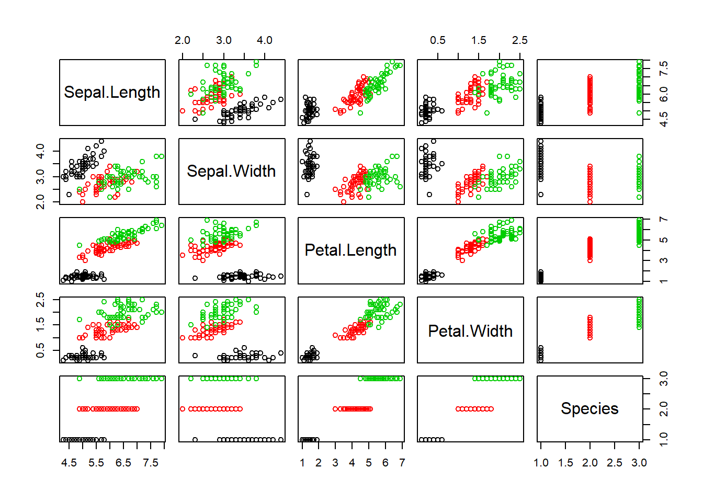
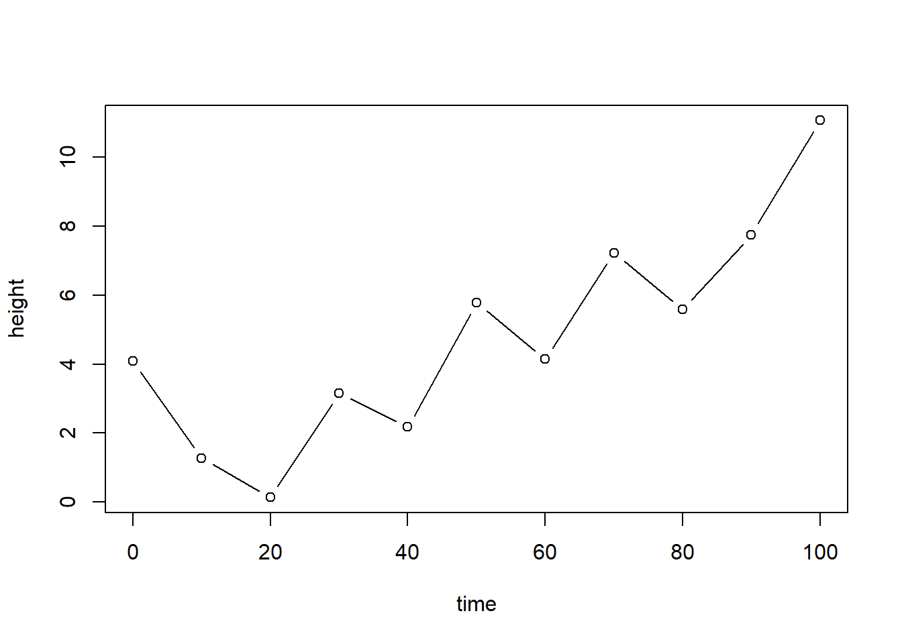
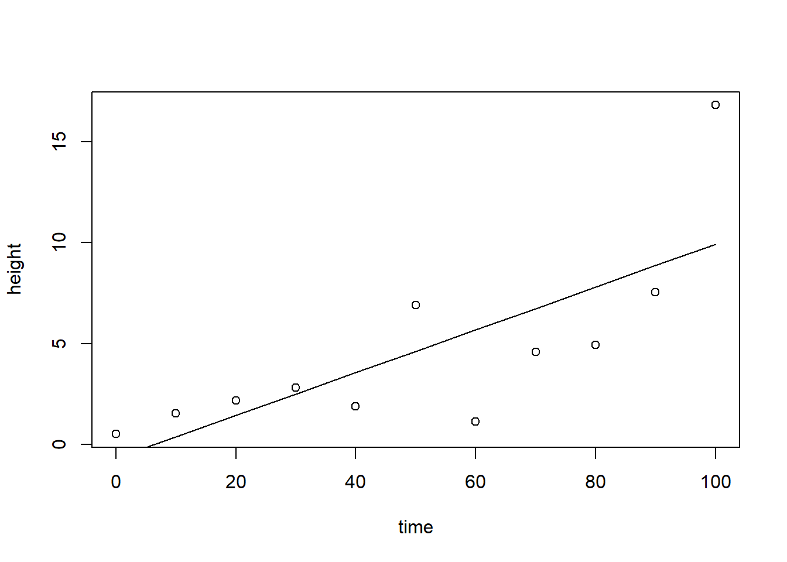

25 Module de base pour les graphiques
Nous allons d’abord survoler le module de base, en mode impératif. La fonction de base pour les graphiques en R est plot(). Pour nous exercer avec cette fonction, chargeons d’abord le tableau de données d’exercice iris, publié en 1936 par le célèbre biostatisticien Ronald Fisher.
## Sepal.Length Sepal.Width Petal.Length Petal.Width Species
## 1 5.1 3.5 1.4 0.2 setosa
## 2 4.9 3.0 1.4 0.2 setosa
## 3 4.7 3.2 1.3 0.2 setosa
## 4 4.6 3.1 1.5 0.2 setosa
## 5 5.0 3.6 1.4 0.2 setosa
## 6 5.4 3.9 1.7 0.4 setosaLe tableau iris contient 5 colonnes, les 4 premières décrivant les longueurs et largeurs des pétales et sépales de différentes espèces d’iris dont le nom apparait à la 5ième colonne. La manière la plus rapide d’extrasire une colonne d’un tableau est d’appeler le tableau, suivit du $, puis du nom de la colonne, par exemple iris$Species. Pour générer un graphique avec la fonction plot():

Par défaut, le premier argument est le vecteur définissant l’axe des x et le deuxième est celui définissant l’axe des y. Le graphique précédent peut être amplement personnalisé en utilisant différents arguments.

Exercice. Utilisez ces arguments dans la cellule de code de la figure plot(iris$Sepal.Length, iris$Petal.Length).
Remarquez que la fonction a décidé toute seule de créer un nuage de point. La fonction plot() est conçue pour créér le graphique approprié selon le type des données spécifiées: lignes, boxplot, etc. Si l’on spécifiait les espèces comme argument x…

De même, la fonction plot() appliquée à un tableau de données générera une représentation bivariée.

Il est possible d’encoder des attributs grâce à des vecteurs de facteurs (catégories).

L’argument type = "" permet de personnaliser l’apparence:
type = "p": lignetype = "l": lignetype = "o"ettype = "b": ligne et pointstype = "n": ne rien afficher
Créons un jeu de données.
time <- seq(0, 100, 10)
height <- abs(time * 0.1 + rnorm(length(time), 0, 2)) # abs pour forcer les valeurs positives
plot(time, height, type = 'b')
Le type de ligne est spécifié par l’argument lty et la largeur du trait, par l’argument lwd.
La fonction hist() permet quant à elle de créer des histogrammes. Parmi ses arguments, breaks est particulièrement utile, car il permet d’ajuster la segmentation des incréments.

Exercice. Ajustez le titre de l’axe des x, ainsi que les limites de l’axe des x. Êtes-vous en mesure de colorer l’intérieur des barres en bleu?
La fonction plot() peut être suivie de plusieurs autres couches comme des lignes (lines() ou abline()), des points (points()), du texte (text()), des polygones (polygon(), des légendes (legend())), etc. On peut aussi personnaliser les couleurs, les types de points, les types de lignes, etc. L’exemple suivant ajoute une ligne au graphique. Ne prêtez pas trop attention aux fonctions predict() et lm() pour l’instant: nous les verrons au chapitre 5.

Pour exporter un graphique, vous pouvez passer par le menu Export de RStudio. Mais pour des graphiques destinés à être publiés, je vous suggère d’exporter vos graphiques avec une haute résolution à la suite de la commande png() (ou jpg() ou svg()).
png(filename = 'images/mon-graphique.png', width = 3000, height=2000, res=300)
plot(x = iris$Petal.Length,
y = iris$Sepal.Length,
col = iris$Species,
cex=3, # dimension des points
pch = 16) # type de points
dev.off()## png
## 2Ce format crée une version vectorielle du graphique, c’est-à-dire que l’image exportée est un fichier contenant les formes, non pas les pixels. Cela vous permet d’éditer votre graphique dans un logiciel de dessin vectoriel (comme Inkscape).
J’ai utilisé le format d’image png, utile pour les images de type graphique, avec des changements de couleurs drastiques. Pour les photos, vous préférerez le format jpg. Des éditeurs demandront peut-être des formats vectoriels comme pdf ou eps. Si vous ne trouvez pas de moyen de modifié un aspect du graphique dans le code (bouger des étiquettes ou des légendes, ajouter des éléments graphiques), vous pouvez exporter votre graphique en format svg (par la commande svg(). Ce format vectoriel peut être ouvert avec des logiciels de dessin vectoriel comme le logiciel libre Inkscape.
Le module de base de R comprend une panoplie d’autres particularités que je ne couvrirai pas ici, en faveur du module ggplot2.